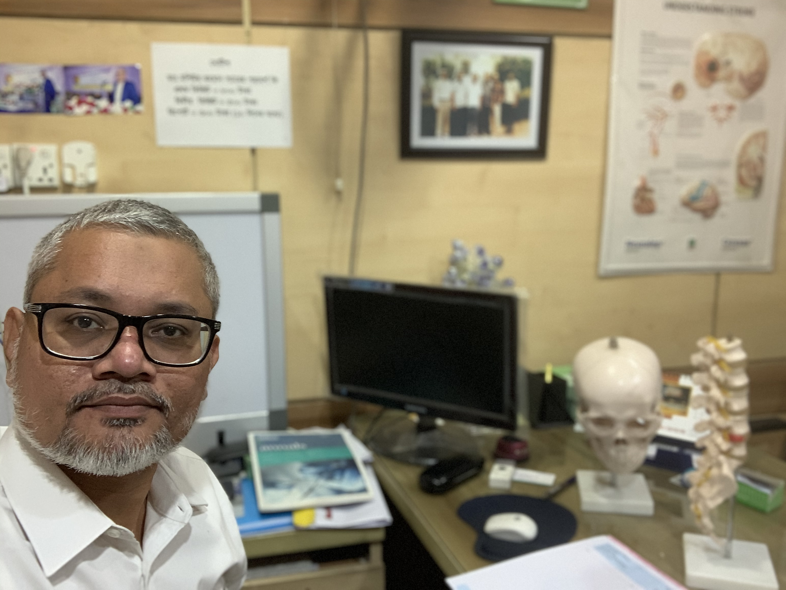
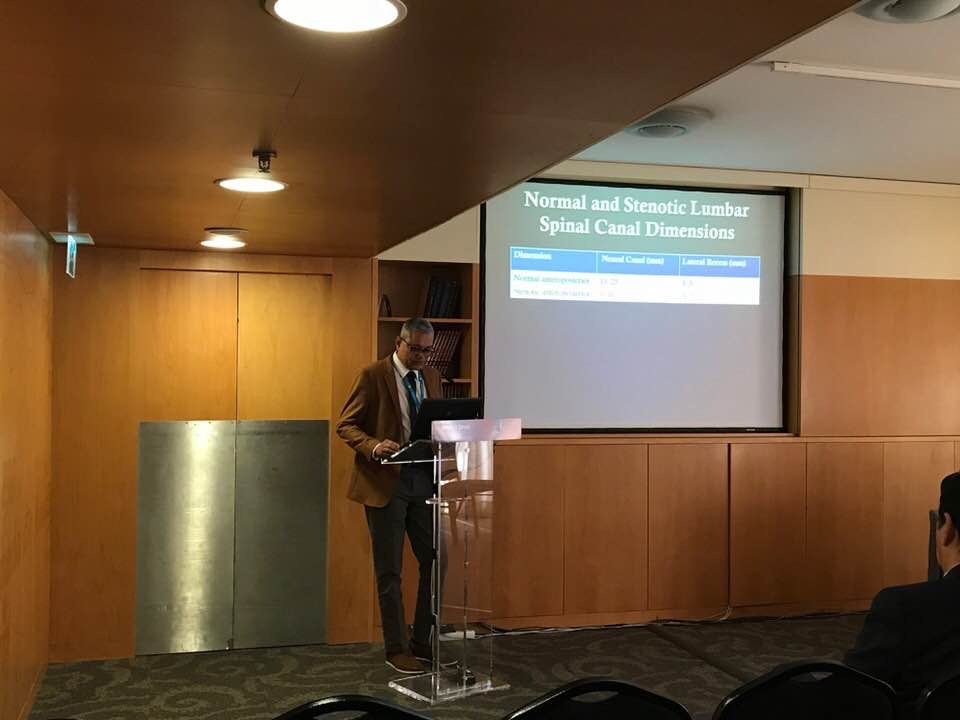
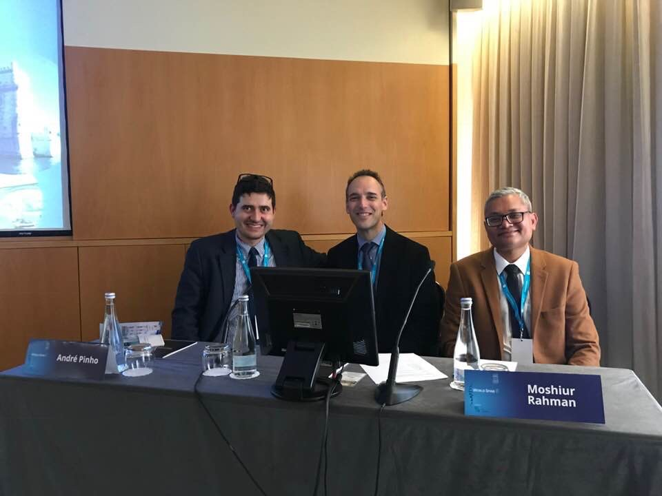
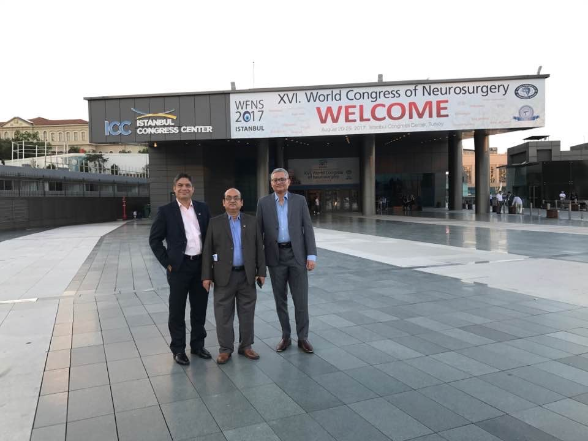

DR.TUTUL@YAHOO.COM
017-133-65274
About Me

Dr Md Moshiur Rahman
MBBS MS (NEUROSURGERY)
I am practicing neurosurgery and helping patients find their way back to health. Various years of academic and hands-on experience have turned me into a responsible and hardworking Brain and Spine Surgeon. Please read below to learn about my experience as a practitioner.
Membership (Professional):
Member of Bangladesh Society of Neurosurgeons
Member of Neurospine Society of Bangladesh
Member of World Spinal Column Society
Work Experience::
Working as Assistant Professor (Current Charge) in Neurosurgery in Holy Family Red Crescent Medical College, Dhaka since 2011 till to date
Worked as a resident in neurosurgery in Holy Family Hospital, Dhaka since 2002 to 2004 and 2009 to 2011.
Attended as a speaker (oral presentation) in WFNS, ACNS conference and cadaveric dissection programmes since 2010 in home and abroad
Attended as a Faculty in World Spine 8 in Porto, Portugal in April, 2018.
Download CV




Maecenas pharetra imperdiet finibus. Aenean tortor lectus, facilisis non pellentesque non
My Life Journey
Dr. Moshiur Rahman was born in Bangladesh in 1973. He had completed post graduation (MS in Neurosurgery) from Dhaka Medical College under University of Dhaka in 2009.
He became Assistant Professor of Neurosurgery in 2011 in Holy Family Red Crescent Medical College
Currently working as Assistant Professor in Neurosurgery department of Holy Family Red Crescent Medical College & Hospital, Dhaka, Bangladesh Dr. Rahman have a personal series of about 2000 cranial and spinal surgery which include more than 100 minimally invasive spine surgery, a fair number of complex vascular and skull base cases, many endoscopic procedures and a few brain stem lesions surgery.
He has 18 national and international publications. He travelled many countries of the world as delegate & invited speaker. Dr. Rahman is member of 5 national and international medical societies.